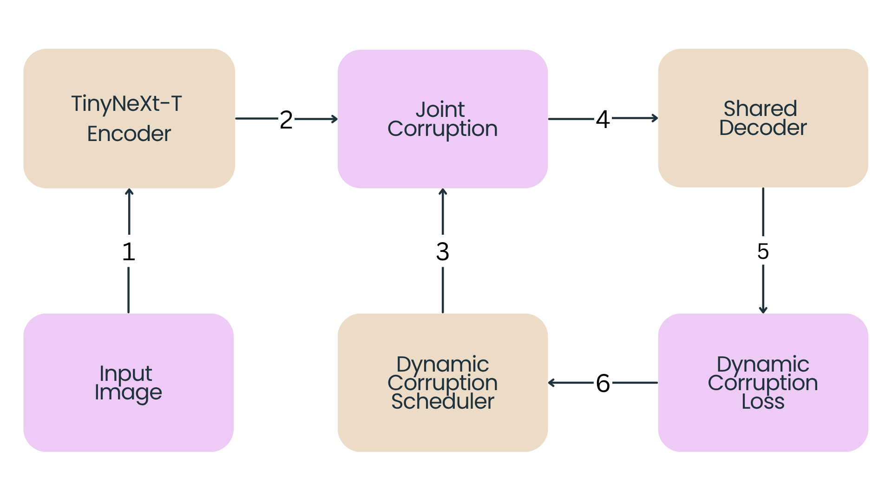
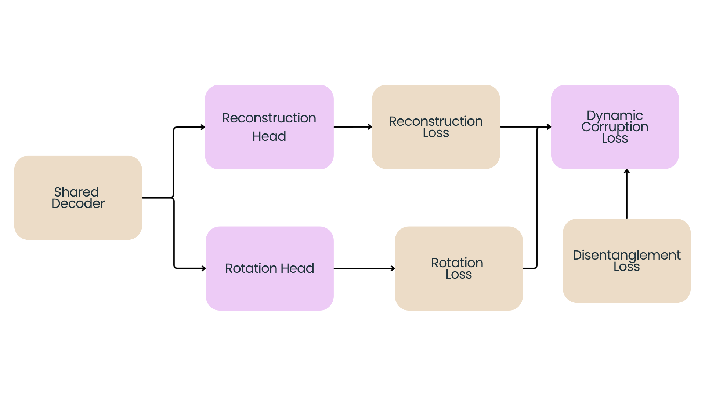

Project Overview
This research develops a lightweight, patch-level, multi-pretext self-supervised learning framework engineered specifically for tiny hybrid CNN-Transformer architectures. It establishes an optimization strategy to build visual representations within a strict 1-Million parameter limit using unlabelled data under severe downstream label starvation.
Abstract
Self-supervised learning (SSL) has demonstrated strong representational power for large Vision Transformers trained on massive datasets, yet its applicability to tiny hybrid CNN-Transformer architectures under strict parameter limitations and downstream label-scarce conditions remains largely unexplored. This paper proposes a novel multi-pretext SSL methodology that simultaneously app token masking and token rotation corruption to the same latent token sequence within a single forward pass. The pipeline introduces three contributions not previously combined: joint, non-overlapping dual corruption that forces the encoder to resolve co-existing corruptions simultaneously, a Dynamic Corruption Scheduler that adapts mask and rotation ratios per step via an exponential moving average (EMA) of per-task loss magnitudes and a gradient-reversal disentanglement loss that explicitly penalises cross-task feature leakage between the reconstruction and rotation heads.
I. Introduction & Motivation
Modern computer vision milestones heavily rely on massive backbone architectures and large server-scale compute profiles. This sets up a fundamental mismatch with edge deployment targets like microcontrollers and IoT nodes working under memory and hardware ceilings.
While edge-scale hybrid configurations like TinyNeXt handle supervised accuracy-efficiency trade-offs securely under 1 M parameters, their architectural compatibility with un-pretrained SSL frameworks remained completely uncharacterized. This framework addresses this gap with zero reliance on costly external graph architectures or deep attention layers.
II. Core Methodology Components
The system operates around an asymmetric encoder-decoder design. The encoder utilizes a randomly initialized TinyNeXt-T backbone, while the decoder serves as a temporary, lightweight two-layer Transformer trunk containing two standalone task heads.

A. Joint Corruption Block
The baseline token sequences are split into completely disjoint, non-overlapping manipulation blocks within a single forward pass to rule out supervisory feedback ambiguities:
n_r = ⌊(N - n_m) · r_r⌋ [Rotated Tokens Set]
Masked subsets map to a learnable mask embedding space, while rotated components encounter a cyclic feature-dimension rolling sequence.
B. Dynamic Corruption Scheduler
To keep basic pretext tasks from over-running the collaborative gradient signals, an exponential moving average tracker scales task weights relative to ongoing loss challenge dynamics:
r_r = clip( ℓ_r / (ℓ_m + ℓ_r), 0.25, 0.5 )

As shown in the runtime validation log above, the scheduler actively monitors loss fluctuations to re-balance mask budgets and structural modification targets at regular sequence steps, ensuring smooth multi-task training convergence.
C. Multi-Task Dynamic Loss Formulation
The complete configuration dynamically balances total backpropagation objectives through an adaptive joint weighting mechanism calculated at each operational step $t$:
The task weights $\lambda_1(t)$ and $\lambda_2(t)$ are adaptively balanced using exponential moving averages of their independent task-specific losses to prevent trivial optimization short-circuiting. The disentanglement weight $\lambda_3$ handles cross-task feature leaks across heads using an adversarial objective driven by a Gradient Reversal Layer (GRL).

Key Structural Contributions
- Joint, Non-Overlapping Dual Corruption: Disjoint token partitioning allows multiple pretext tasks to converge without conflict inside a single training step.
- Dynamic Scheduler & Multi-Task Loss: Adapts mask, token allocation, and gradient loss bounds dynamically on the fly by balancing EMA-tracked loss paths.
- Gradient-Reversal Penalty: Encourages the system to form cleaner, structurally decoupled representation layers.
Experimental Configuration
Encoder Backbone: TinyNeXt-T configured with 1 M parameters and a feature dimension of D = 192.
Decoder Block: A light 2-layer trunk containing 8 attention heads, entirely discarded at the end of the pre-training loop.
Downstream Evaluation Protocol: Tested across CIFAR-10 and Tiny-ImageNet using linear probing restrictions. The model is intentionally restricted to an extreme label starvation budget of only 20% available dataset labels during downstream fine-tuning steps.
III. Results & Evaluation
Downstream linear probe classification performance under severe target label starvation constraints:
| Method | CIFAR-10 Accuracy | Tiny-ImageNet Accuracy |
|---|---|---|
| Proposed Pipeline (Ours) | 60.01% | 11.23% |
| Random Guessing Baseline | 10.00% | 0.50% |
| EMP-SSL (Server Scale) | 91.50% | 51.50% |

Analysis of Feature Utility: Downstream evaluation demonstrates that the proposed pipeline successfully extracts substantial, non-trivial semantic features under severe label starvation. On CIFAR-10, our method reaches 60.01% accuracy, vastly outperforming the random choice baseline of 10.00%. On Tiny-ImageNet, it recovers 11.23% accuracy against a random baseline of 0.50%. This demonstrates clear representational capabilities far superior to random chance, providing an initial baseline for edge-scale SSL design constraints under severe parameter capacity walls.
Research Team
S. Munasinghe (e20259)
e20259@eng.pdn.ac.lk
Supervision
Dr. Sampath Deegalla
sampath@eng.pdn.ac.lk